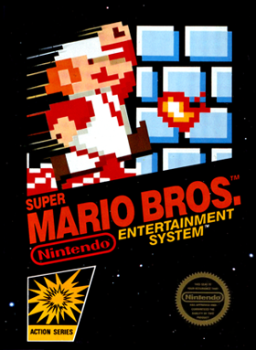

Sobre
Shigeru Miyamoto (nascido em 16 de novembro de 1952) é um designer de jogos japonês e produtor da Nintendo, amplamente considerado o criador de alguns dos jogos e franquias mais icônicos e influentes da história dos videogames.
Ingressou na Nintendo em 1977 e, desde então, desempenhou um papel essencial na transformação da empresa em uma potência global da indústria dos games. Miyamoto é o criador de franquias lendárias como:
- Super Mario
- The Legend of Zelda
- Donkey Kong
- Star Fox
- Pikmin
Sua filosofia de design é focada em gameplay divertido, acessível e inovador, sendo pioneiro em muitos elementos que hoje são padrão na indústria.
Além de seu talento criativo, Miyamoto continua sendo uma figura carismática e respeitada, representando o espírito lúdico dos videogames.
Para saber mais sobre Shigeru Miyamoto, veja sua página na Wikipedia.
Principais Obras
Donkey Kong (1981)
O primeiro grande sucesso de Miyamoto, marcando o início da era de ouro dos arcades e introduzindo Mario ao mundo.
Super Mario Bros. (1985)
Revolucionou os jogos de plataforma e definiu o padrão para o gênero. Tornou-se uma das franquias mais reconhecidas do planeta.
The Legend of Zelda (1986)
Introduziu elementos de aventura e exploração em mundos abertos, influenciando gerações de jogos.

Star Fox (1993)
Usou gráficos 3D inovadores com o chip Super FX do Super Nintendo.

Pikmin (2001)
Uma abordagem criativa de estratégia em tempo real com personagens carismáticos e mundos encantadores.
"Um bom jogo pode ser divertido para qualquer pessoa, não importa a idade." — Shigeru Miyamoto